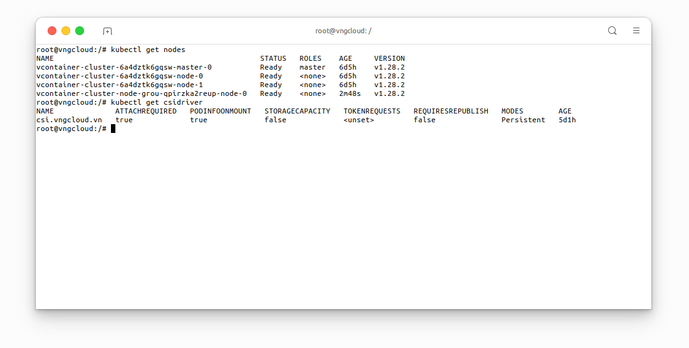
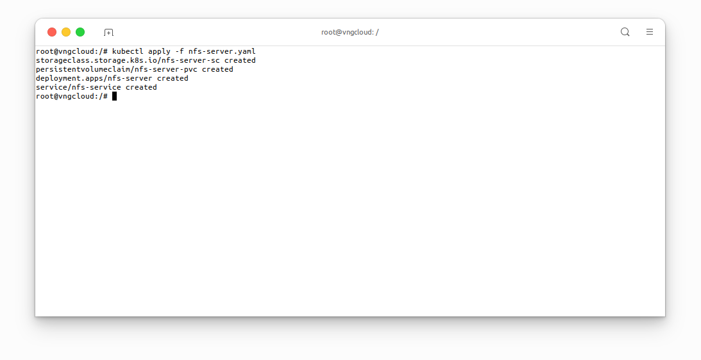
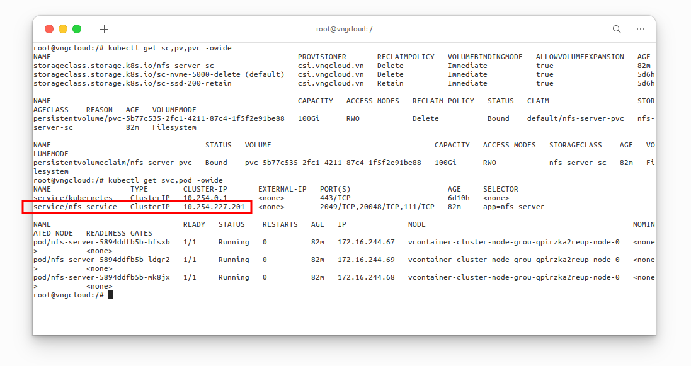
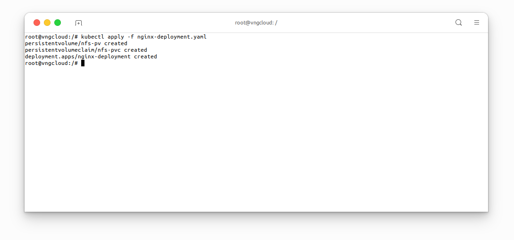
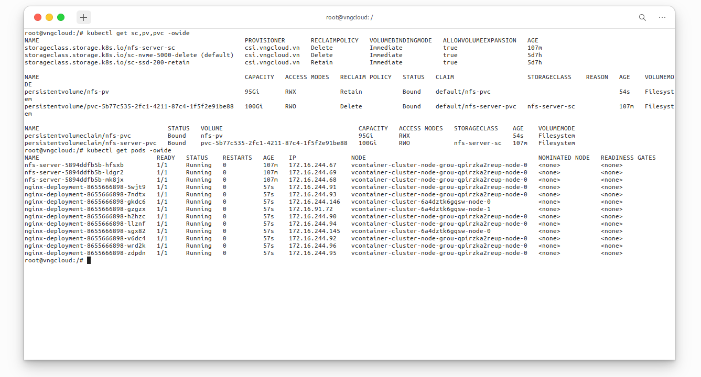

NFS server
The block volume problem
- One drawback of block volume is that it DOES NOT support the
ReadWriteMany(RWX) mode, this is understandable because Linux filesystem typeext4DOES NOT have multiple node writing permission. - Therefore, to use
RWXmode, the block volume must be replaced with a shared file system or NFS server.
\( \Rightarrow \) To solve the above problem, users can build an NFS server inside the Kubernetes clusters, ensure high availability using Kubernetes Deployment, and allow services inside the cluster to access it via Kubernetes Service.
Prepare the necessary resources
This laboratory exercise is conducted on a Kubernetes cluster comprising one master node and three worker nodes, all equipped with the vContainer Storage Interface plugin. The following resources are required:
kubectl get nodes
kubectl get csidriver

Deploy NFS server
As previously discussed, the PersistentVolume created by the vContainer Storage Interface plugin will be utilized. Subsequently, this volume will be mounted to the NFS server deployment, followed by the creation of the NFS server service. This enables other services to access the NFS server deployment through the NFS server service. In my scenario, I selected node vcontainer-cluster-node-grou-qpirzka2reup-node-0 as the NFS server.
To do that, apply file nfs-server.yaml with the following content:
apiVersion: storage.k8s.io/v1
kind: StorageClass
metadata:
name: nfs-server-sc # [1] The StorageClass name, CAN be changed
provisioner: csi.vngcloud.vn
parameters:
type: vtype-2dd22a8b-179d-484c-bb91-b0520e218f80 # Change this value to proper Volume Type UUID
allowVolumeExpansion: true
---
apiVersion: v1
kind: PersistentVolumeClaim
metadata:
name: nfs-server-pvc # [2] The PersistentVolumeClaim name, CAN be changed
spec:
accessModes:
- ReadWriteOnce
resources:
requests:
storage: 100Gi # [3] The volume size, CAN be changed
storageClassName: nfs-server-sc # MUST be same value with [1]
---
apiVersion: apps/v1
kind: Deployment
metadata:
name: nfs-server # [7] The Deployment name, CAN be changed
spec:
replicas: 3 # [9] The number of replicas, this field is contrainted by the nodeSelector field below
selector:
matchLabels:
app: nfs-server # MUST be same value with [6]
template:
metadata:
labels:
app: nfs-server # [6] The app label, CAN be changed
spec:
nodeSelector:
kubernetes.io/hostname: vcontainer-cluster-node-grou-qpirzka2reup-node-0 # IMPORTANT: This field MUST be set if the replicas [9] greater than 1
containers:
- name: nfs-server
image: registry.vngcloud.vn/public/volume-nfs:0.8
ports:
- name: nfs
containerPort: 2049
- name: mountd
containerPort: 20048
- name: rpcbind
containerPort: 111
securityContext:
privileged: true
volumeMounts:
- mountPath: /exports # [5] The volume mount path, CAN be changed
name: my-volume-name # MUST be same value with [4]
volumes:
- name: my-volume-name # [4] The volume mount name, CAN be changed
persistentVolumeClaim:
claimName: nfs-server-pvc # MUST be same value with [2]
readOnly: false
---
apiVersion: v1
kind: Service
metadata:
name: nfs-service # [8] The Service name, CAN be changed
spec:
ports:
- name: nfs
port: 2049
- name: mountd
port: 20048
- name: rpcbind
port: 111
selector:
app: nfs-server # MUST be same value with [6]
Apply the above manifest:
kubectl apply -f nfs-server.yaml

Verify the resources have been created
kubectl get sc,pv,pvc -owide
kubectl get svc,pod -owide

At this moment, you SHOULD take note the CLUSTER IP of nfs-service service, in my case, it is 10.254.227.201, this IPv4 address will be used later.
Deploy a service to use the NFS server
Now, I will create PersistentVolume, PersistentVolumeClaim and nginx Deployment, follwing the content of file nginx-deployment.yaml, you MUST use the IPv4 address of the nfs-service service which I mentioned in the previous section:
apiVersion: v1
kind: PersistentVolume
metadata:
name: nfs-pv # [1] The PersistentVolume name, CAN be changed
labels:
app: nfs-data # [2] The app label, CAN be changed
spec:
capacity:
storage: 95Gi # The volume size, MUST less than or equal to the size of the PVC that was mounted to the NFS server
accessModes:
- ReadWriteMany # MUST be ReadWriteMany
nfs:
server: "10.254.227.201" # IMPORTANT: Change this value to proper IPv4 address
path: "/"
---
apiVersion: v1
kind: PersistentVolumeClaim
metadata:
name: nfs-pvc # [3] The PersistentVolumeClaim name, CAN be changed
spec:
accessModes:
- ReadWriteMany # MUST be ReadWriteMany
storageClassName: "" # MUST be empty
resources:
requests:
storage: 10Gi # The volume size, MUST less than or equal to the size of the volume size of [1]
selector:
matchLabels:
app: nfs-data # MUST be same value with [2]
---
apiVersion: apps/v1
kind: Deployment
metadata:
name: nginx-deployment # [4] The Deployment name, CAN be changed
labels:
app: nginx # [6] The app label, CAN be changed
spec:
replicas: 10 # [5] The number of replicas, CAN be changed
selector:
matchLabels:
app: nginx # MUST be same value with [6]
template:
metadata:
labels:
app: nginx # MUST be same value with [6]
spec:
containers:
- name: nginx
image: nginx
ports:
- containerPort: 80
volumeMounts:
- mountPath: /var/lib/www/html # The mount path in container, CAN be changed
name: my-volume-name # MUST be same value with [7]
volumes:
- name: my-volume-name # [7] The volume mount name, CAN be changed
persistentVolumeClaim:
claimName: nfs-pvc # MUST be same value with [3]
readOnly: false
Apply the above manifest:
kubectl apply -f nginx-deployment.yaml

Verify the resources have been created:
kubectl get sc,pv,pvc -owide
kubectl get pods -owide

Resize the NFS server volume
User can follow the steps in the Volume resizing section to resize the NFS server volume.